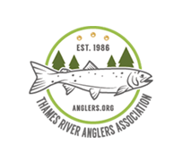

THAMES RIVER
ANGLERS ASSOCIATION
More Information!
Membership
You get to be a TRAA member for a whole year for only $25.00 Due. Your membership also adds another voice to our efforts in protecting and enhancing aquatic habitats in the London & area community. You've taken a lot of enjoyment from this unique fishery. It’s time to give back by being part of the solution.
Fundrasing
Efforts are underway to get the money we need to continue many of the TRAA's most vital projects: Improvements to the Trout Fry, TRAA Trout Hatchery, continuation of the Salmonid Monitoring Program and Komoka Creek Hydrological Study.
Current Projects
Salmoid Monitoring Program
Here's an overview of what happened over a few weekends in the Spring of 2012 when TRAA members and personnel from the Upper Thames River Conservation Authority (UTRCA) waded in for Year 3 of our 5-year Salmonid Tagging and Monitoring Program. Jon George, an MNR biologist from Thunder Bay who is helping us out with this project, compiled the comparative results of 2010 (Year 1) and 2011 (Year 2) and 2012 (Year 3) in an easy-to-understand report.
TRAA Trout Hatchery
The TRAA Trout Hatchery began in the mid-1980's as an outdoor upwelling box located adjacent to Komoka Creek on private property. While it was a simple and rustic affair, the TRAA enjoyed incredible egg hatching and fry survivability rates for several seasons. While this setup served us well it was also very challenging to maintain. We had to pack the upwelling box with straw bales (see picture above right) to keep the water in the cells from freezing. Members of the Trout Hatchery Rotation had to huddle over each cell picking eggs in wind-driven rain, sleet and snow. Something had to be done so a new setup was housed in a new enclosure.
Archived Projects
TRAA Walleye Hatchery
The TRAA and the Upper Thames River Conservation Authority (UTRCA), with the blessing of the Ministry of Natural Resources (MNR), agreed to the operation of a walleye hatchery in Fanshawe Conservation Area, just north-east of London, Ontario. While this was a relatively short-lived initiative, it was very popular with members and the community at large. Many would conclude it was also very successful considering the exciting fishery that developed closely thereafter. The Lake Erie Management Unit (LEMU) forced the TRAA to shut down the walleye hatchery after only three seasons of operation. The LEMU's decision was dubiously based on an American study, that the Thames River walleye were genetically unique from the Grand River walleye (the TRAA's source for eggs). Interestingly, walleye (from egg through adult stages) continue to be transferred throughout Ontario waterways and water bodies seemingly without regard for genetic purity.
TRAA Stream Rehabilitation
The TRAA trout hatchery is fun and educational but the TRAA is not about stocking fish for a "put & take" style of fishery.We understand the connection between a healthy aquatic ecosystem and the sustainability of a naturally reproducing fish population, regardless of the species.The work parties and the work involved at each event vary greatly. Some are very technical, some are just hard slugging and others are a good blend of both.There are lots of different jobs at each event requiring an array of strengths and capabilities. In other words, everyone is welcome to join in on the fun; whether your young or old, a lightweight or a bull, everyone has a place and a job at a TRAA stream rehabilitation work party!
Follow Us On...


Copyright © TRAA Anglers
